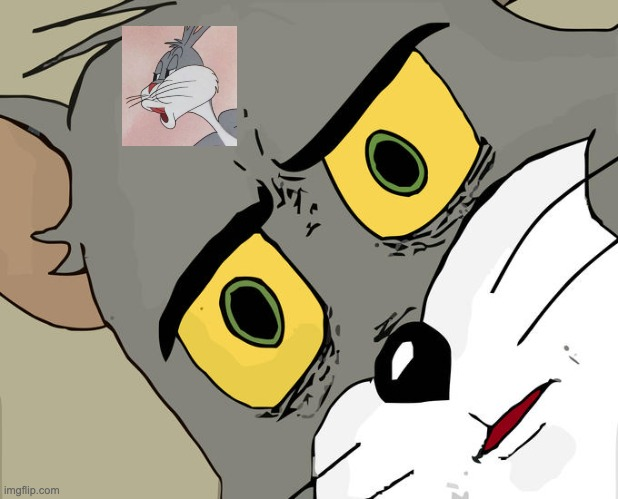

Adrien
Monday, August 14, 2023
My PNPT Feedback
Hi! Today I’m going to share with you my feedback on the PNPT certification that I passed at the beginning of August 2023 by reviewing the before and during the exam!
My knowledge
Before we dive deeper, let me clarify my experience since I see few people talking about their skills before starting the examination. I have 4 years of experience in the field of computer security, with 2 actual years spent as a Pentester. I frequently practice at home, as well as during missions conducting intrusion tests on both internal and external client environments. Moreover, report writing is no longer a mysterious art for me. So, I’m embarking on this certification with a significant advantage compared to someone new to this field. üõ°Ô∏è
PNPT Package & Courses
Before purchasing the PNPT courses and voucher, it’s essential to note that the two exam vouchers do not have an expiration date. The courses are available on the Academic TCM-Security platform, and you’ll be provided with five courses, along with their completion percentages, to give you an idea of what I’ve gone through so far:
- Practical Ethical Hacking - The Complete Course 94%
- Windows Privilege Escalation for Beginners 75%
- Linux Privilege Escalation for Beginners 0%
- Open-Source Intelligence (OSINT) Fundamentals 0%
- External Pentest Playbook 0%
Additionally, you’ll have access to VODs of Twitch live sessions:
- PNPT Live Training VOD 0%
Please note that just because I haven’t finished all the courses doesn’t mean you should follow suit. As I mentioned earlier, I’m starting with an advantage.
Exam Period - 5 days
It’s go-time! You’ve set up your Kali Linux virtual machine, and the countdown has begun!
You’ve got 5 days to conquer this examination, which means compromising both the external and internal scope, “securing” that Domain Admin access to the Domain Controller! All’s fair in this quest, but just remember, you’ll be following a step-by-step process, just like on a genuine pentesting engagement with a client. So, no DDOS or other disruptions ‚Äì they could spell the end of your exam period!
Exam Skills
If I can offer you a few tips on the areas to review and master before taking the exam, here they are:
- OSINT (Open-Source Intelligence)
- Web Application Pentesting
- Pivoting and Proxychains
- Active Directory Pentesting
- Enumeration, Enumeration, ENUMERATION!
Exam Package
Regarding your Exam Package, you’ll receive a PDF document containing your scope and instructions from your client. You can also make use of the password wordlists kindly provided by TCM (it’ll make your life easier!).
Lastly, you’ll receive your VPN access for the lab and the option to revert or stop the lab whenever you want. This won’t affect the lab’s configuration or the exam duration.
My Exam
As for me, I faced a few challenges during the enumeration phase. I won’t say more to avoid spoiling anything! The attacks weren’t overly difficult; they’re entirely manageable even for beginners if you follow the courses provided by TCM.
Still, it’s a lab exam that somewhat mirrors reality, even though everything is designed to give you hints about where to look and what to do without causing too many issues.

Report Period - 2 days
When it comes to the report writing phase, it’s also nothing overly complicated. I can only advise you to capture screenshots BEFORE your exam period ends!
As for what I did, I took notes on the vulnerabilities I discovered and how to exploit them. It’s important to provide Proof of Concepts (PoCs) but also suggestions for fixing them. Remember, this report is intended for a client, so write it accordingly. Include both the technical and executive aspects.
My report ended up being a total of 60 pages. I can list the main headings for you to give you an idea of the content, in case it helps inspire you!
- Objective & Context
- Scope
- Server Discovery
- Testing Methodology
- Score & Severity
- Executive Summary
- Vulnerability Summary
- Remediation Summary
- Attack Paths
- Technical Details (Vulnerability Details and PoCs)

Final Presentation
Aside from the technical hiccups at the beginning of the presentation (well, you can’t really hide the chaos, can you…), it was quite swift ‚Äì no more than 15 minutes ‚Äì with a few questions from the examiner. On my end, I jumped right into presenting the English PDF report (with my French Baguette accent).
The atmosphere was friendly, with no pressure as long as you’re confident in your subject! The advantage is that the examiner will give you the final verdict right away, letting you know if you’ve earned your certification or not.
It’s still a great experience with TCM-Security. If you have any questions, I can answer them without revealing the exam’s content. As for me, I’m leaning towards the next certification in Malware Analysis, PJMR!